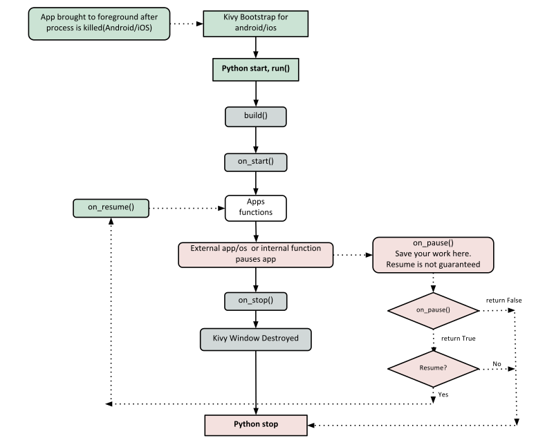
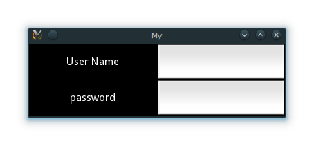

Title: Kivy Basics Date: 2017-01-22 Category: Kivy Tags: Python,Kivy
原文地址。
Kivy要依赖很多Python包，比如 pygame, gstreamer, PIL, Cairo 等等还有好多。这些包并非都是必需的，要根据你的运行平台来看具体情况，有时候缺那么一两个包就可能导致安装失败，或者运行过程中出错等等，这就挺痛苦的。所以Kivy官方针对Windows和MacOS X提供了集成好关键部件的压缩包，解压缩之后直接就能用。具体的安装过程可以参考下面链接中的中文安装指南：
如果你非要自己从零开始安装，那最起码要确保安装有Cython和Pygame。这两个包可以通过pip来安装，如下所示：
Bash
pip install cython
pip install hg+http://bitbucket.org/pygame/pygame
pip install kivy
Kivy的开发版本也可以通过git来安装：
Bash
git clone https://github.com/kivy/kivy
make
创建一个Kivy应用挺简单的，大概步骤如下：
下面的代码就是上述思路的最小化实现：
```Python import kivy kivy.require('1.0.6') # 注意要把这个版本号改变成你现有的Kivy版本号!
from kivy.app import App # 译者注：这里就是从kivy.app包里面导入App类 from kivy.uix.label import Label # 译者注：这里是从kivy.uix.label包中导入Label控件，这里都注意开头字母要大写
class MyApp(App):
def build(self): # 译者注：这里是实现build()方法
return Label(text='Hello world') # 译者注：在这个方法里面使用了Label控件
if name == 'main': MyApp().run() # 译者注：这里就是运行了。
''' 译者注：这一段的额外添加的备注是给萌新的. 就是要告诉萌新们，一定要每一句每一个函数每一个变量甚至每一个符号，都要读得懂！！！ 如果是半懂不懂的状态，一定得学透了，要不然以后早晚得补课. 这时候又让我想起了结构化学。 总之更详细的内容后面会有，大家加油。 ''' ```
把上面的代码以文本形式复制到一个文本文件中，保存成py文件，例如main.py，然后运行，就行了。
跟学习开发Android应用的时候类似，咱们首先也是要了解一下Kivy应用的生命周期：

如上图所示，不论什么用途和目的，咱们应用的入口都是这个run()方法，在本文的样例代码中，就是“MyApp().run()”。
下面就一行一行开始详细解释了：
Python
from kivy.app import App
为什么要导入这个App类呢？因为咱们自定义的这个App要继承这个类。这个类的位置在kivy安装目录下的kivy目录下的app.py文件中。
如果你想要深入挖掘一下，去了解这个Kivy的App类到底是怎么个内容，你可以打开这个app.py文件，亲自来看看。Kivy作者特别鼓励大家去阅读源码。Kivy基于Python，用Sphinx编写的文档，所以每个类的文档都在对应的文件内。
然后咱们回过头来，继续看本文这次的代码的第二行：
Python
from kivy.uix.label import Label
这里一定要特别注意各种包和类的导入。"kivy.uix"这个包的作用是容纳用户界面元素，比如各种输出布局和控件。
接下来看到这一行：
Python
class MyApp(App):
这一行定义了咱们这次的Kivy应用的基类。如果你要做修改的话，把MyApp改成你要设定的应用名字就可以了。
接着往下看：
Python
def build(self):
在上面的生命周期图中加粗强调的部分表明，build函数所处的是要进行初始化和返回根控件的位置。根控件返回的操作在下面这一行中实现：
Python
return Label(text='Hello world')
这里我们用文本‘Hello World’对Label这一控件进行了初始化，并且返回了其实例。这个Label就是咱们这个应用的根控件了。
Python是用缩进来区别代码块的，所以一定要注意上面代码的缩进和层次，尤其是函数定义那部分。
然后咱们继续，到了真正让应用开始运行的这部分了：
Python
if __name__ == '__main__':
MyApp().run()
这里对MyApp这个类进行了初始化，然后调用了这个类的run()方法。这样就初始化并启动了我们的Kivy应用了。
接下来就是要在不同操作系统平台上来运行咱们刚刚写好的应用了：
To run the application, follow the instructions for your operating system:
Bash
$ python main.py
CMD
$ python main.py #用系统Python运行
C:\appdir>kivy.bat main.py #用kivy.bat来运行，注意这里要设定好正确的路径
Bash
$ kivy main.py
这个应用运行之后的具体效果就是下面图片所示这样，会打开一个窗口，然后展示出一个Label，上面写着文本‘Hello World’，这个Label会覆盖该窗口的全部区域。就这样了。
接下来咱们扩展一下这个应用的功能，增加一个用户名/密码输入的页面吧。
```Python from kivy.app import App from kivy.uix.gridlayout import GridLayout from kivy.uix.label import Label from kivy.uix.textinput import TextInput
class LoginScreen(GridLayout):
def __init__(self, **kwargs):
super(LoginScreen, self).__init__(**kwargs)
self.cols = 2
self.add_widget(Label(text='User Name'))
self.username = TextInput(multiline=False)
self.add_widget(self.username)
self.add_widget(Label(text='password'))
self.password = TextInput(password=True, multiline=False)
self.add_widget(self.password)
class MyApp(App):
def build(self):
return LoginScreen()
if name == 'main': MyApp().run() ```
在下面这行代码中，我们导入了一种名为Gridlayout的布局：
Python
from kivy.uix.gridlayout import GridLayout
这个类被我们用作基类来制作根控件LoginScreen，在如下代码中进行了定义：
Python
class LoginScreen(GridLayout):
如下代码中，我们在LoginScreen类中重新定义了初始化方法init()，这样来增加一些控件，并且定义了这些控件的行为：
Python
def __init__(self, **kwargs):
super(LoginScreen, self).__init__(**kwargs)
一定要注意这里要加super，才能把现有的新初始化方法覆盖掉继承来的旧初始化方法。另外也要注意，这里调用super的时候没有省略掉**kwargs，这是一种好习惯。
然后继续往下看：
Python
self.cols = 2
self.add_widget(Label(text='User Name'))
self.username = TextInput(multiline=False)
self.add_widget(self.username)
self.add_widget(Label(text='password'))
self.password = TextInput(password=True, multiline=False)
self.add_widget(self.password)
上面的代码中，我们让GridLayout来管理子控件，把子控件设置为两栏，然后加上用户名和密码的Label字符显示控件和TextInput字符输入控件。
运行上面的代码，得到的窗口效果大概如下图：

尝试着重新缩放一下窗口大小，你会发现上面的控件会相对整个窗口的尺寸而自行调整大小，并不需要人为去操作了。这是因为这些控件都使用了默认的尺寸。
上面这个代码虽然有输入框，但是并没有提供用户输入的支持和处理，所以并不能进行用户名/密码验证，也没有任何其他用处。后续的练习中咱们再来深入去探讨这些功能，并且还会讲一讲空间的尺寸和位置等话题。